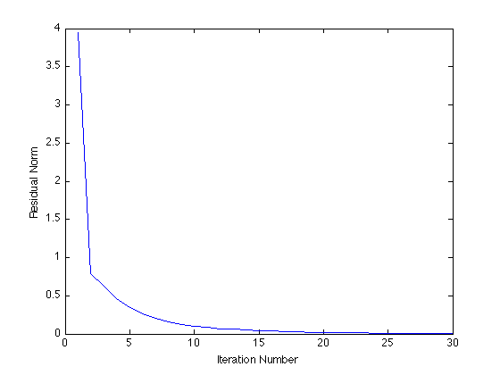

Nonnegative matrix factorization
m = 10; n = 10; k = 5;
A = rand(m,k)*rand(k,n);
Y = rand(m,k);
MAX_ITERS = 30;
residual = zeros(1,MAX_ITERS);
for iter = 1:MAX_ITERS
cvx_begin quiet
if mod(iter,2) == 1
variable X(k,n)
else
variable Y(m,k)
end
X >= 0;
Y >= 0;
minimize(norm(A - Y*X,'fro'));
cvx_end
fprintf(1,'Iteration %d, residual norm %g\n',iter,cvx_optval);
residual(iter) = cvx_optval;
end
plot(residual);
xlabel('Iteration Number');
ylabel('Residual Norm');
disp( 'Original matrix:' );
disp( A );
disp( 'Left factor Y:' );
disp( Y );
disp( 'Right factor X:' );
disp( X );
disp( 'Residual A - Y * X:' );
disp( A - Y * X );
fprintf( 'Residual after %d iterations: %g\n', iter, cvx_optval );
Iteration 1, residual norm 3.94785
Iteration 2, residual norm 0.786242
Iteration 3, residual norm 0.623405
Iteration 4, residual norm 0.466988
Iteration 5, residual norm 0.347565
Iteration 6, residual norm 0.268289
Iteration 7, residual norm 0.20244
Iteration 8, residual norm 0.153103
Iteration 9, residual norm 0.120332
Iteration 10, residual norm 0.0980747
Iteration 11, residual norm 0.0819517
Iteration 12, residual norm 0.0692687
Iteration 13, residual norm 0.0588746
Iteration 14, residual norm 0.0501491
Iteration 15, residual norm 0.0428428
Iteration 16, residual norm 0.0366266
Iteration 17, residual norm 0.0313997
Iteration 18, residual norm 0.0269422
Iteration 19, residual norm 0.0231859
Iteration 20, residual norm 0.0199815
Iteration 21, residual norm 0.017273
Iteration 22, residual norm 0.0149589
Iteration 23, residual norm 0.0129938
Iteration 24, residual norm 0.0113055
Iteration 25, residual norm 0.00985656
Iteration 26, residual norm 0.00860157
Iteration 27, residual norm 0.00751349
Iteration 28, residual norm 0.00656364
Iteration 29, residual norm 0.00573626
Iteration 30, residual norm 0.00501269
Original matrix:
0.7866 1.7239 1.3452 1.5511 1.3530 1.1933 1.1612 1.7782 0.9493 1.5523
1.1583 1.4047 1.3236 1.2878 1.1097 1.2681 1.4426 1.7846 0.6617 2.1024
1.2201 1.3939 0.9230 1.0590 1.1370 1.1894 1.0099 1.4058 0.7613 1.3088
1.6507 2.3825 2.0352 2.1016 1.9563 1.8618 1.9193 2.7211 1.4302 2.6015
1.5864 1.8379 1.2313 1.3710 1.5395 1.5604 1.3822 1.9030 1.0934 1.7194
1.3007 2.0306 1.5088 1.6731 1.6468 1.6124 1.6143 2.1933 1.1256 2.0814
0.8572 1.6265 1.4736 1.5347 1.3371 1.1011 1.1438 1.8244 1.0729 1.5531
0.5591 1.0591 1.0106 1.0441 0.8555 0.7072 0.7349 1.2005 0.6775 1.0536
1.4222 2.2313 1.6812 1.9507 1.7405 1.6636 1.4519 2.2397 1.1687 2.0234
0.9937 1.4187 0.4619 0.8417 1.1113 1.2318 0.9158 1.1330 0.5926 0.9621
Left factor Y:
0.8506 0.0019 0.1786 1.2307 0.5579
1.0340 0.8942 0.0000 0.0000 0.0008
0.1167 0.9552 0.7626 0.2921 0.1731
1.0720 0.9371 0.9543 1.1056 0.3304
0.1870 1.2976 1.1495 1.0262 0.1194
0.8890 0.7620 0.4034 1.7765 0.2553
0.7814 0.1217 0.7678 0.9108 0.4490
0.5456 0.0275 0.4720 0.2105 0.3488
0.6605 0.5188 0.6495 0.1627 0.7169
0.0000 0.8151 0.0000 1.9210 0.1901
Right factor X:
0.2806 0.5785 0.9544 0.7681 0.4810 0.4159 0.7541 1.0174 0.4063 1.1971
0.9710 0.9010 0.3751 0.5509 0.6841 0.9341 0.7410 0.8186 0.2699 0.9663
0.1298 0.1418 0.4073 0.2421 0.2114 -0.0000 0.0870 0.3295 0.3968 0.1146
0.0162 0.1823 -0.0000 0.0676 0.1636 0.1218 0.0940 0.1170 0.1278 0.0002
0.9018 1.7580 0.8243 1.3804 1.2612 1.2319 0.6942 1.2696 0.6721 0.9167
Residual A - Y * X:
-0.0001 -0.0003 0.0000 0.0001 -0.0002 0.0006 -0.0002 0.0000 0.0002 -0.0000
-0.0007 -0.0005 0.0007 -0.0001 -0.0004 0.0019 -0.0002 -0.0003 -0.0002 -0.0001
0.0000 0.0002 0.0001 -0.0001 0.0001 -0.0002 0.0001 -0.0001 -0.0001 -0.0000
0.0003 0.0004 -0.0004 0.0001 0.0002 -0.0011 0.0002 0.0001 -0.0002 0.0002
0.0004 0.0006 -0.0005 0.0001 0.0003 -0.0015 0.0003 0.0001 -0.0002 0.0002
0.0000 -0.0001 -0.0003 0.0002 -0.0001 -0.0001 -0.0001 0.0001 0.0001 0.0001
0.0004 0.0006 -0.0007 0.0002 0.0003 -0.0016 0.0003 0.0001 -0.0002 0.0002
0.0002 0.0003 -0.0002 -0.0000 0.0002 -0.0006 0.0001 0.0000 -0.0001 0.0001
-0.0003 -0.0004 0.0007 -0.0003 -0.0002 0.0013 -0.0001 -0.0002 0.0000 -0.0003
-0.0003 -0.0001 -0.0006 0.0004 -0.0004 0.0022 -0.0007 -0.0005 -0.0007 -0.0003
Residual after 30 iterations: 0.00501269
